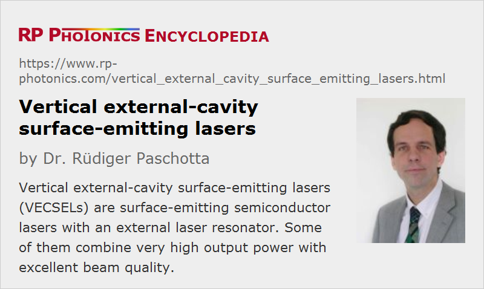

Vertical External-cavity Surface-emitting Lasers
Acronym: VECSEL
Definition: surface-emitting semiconductor lasers with an external laser resonator
More general term: surface-emitting semiconductor lasers
How to cite the article; suggest additional literature
Author: Dr. Rüdiger Paschotta
A VECSEL is a semiconductor laser based on a surface-emitting semiconductor gain chip and a laser resonator which is completed with one or several external optical elements. Compared with other types of semiconductor lasers, VECSELs can generate very high optical powers in diffraction-limited beams, i.e., with high beam quality. They can thus often compete with some doped-insulator solid-state lasers and gas lasers. Compared with those, their wavelength versatility can be an important advantage.
The semiconductor device (gain chip) may contain only a single semiconductor Bragg mirror and the active region (gain region) with typically several quantum wells (QWs). The semiconductor structure typically has a total thickness of only a few micrometers (not including the semiconductor substrate), and is mounted on some kind of heat sink. The laser resonator is completed with an external mirror, typically in a distance between a few millimeters and some tens of centimeters. (For good beam quality, the length of the resonator should not be much smaller than the Rayleigh length of the intracavity beam.) The laser mode size in the semiconductor chip is essentially defined by the external resonator setup.
The external resonator may be folded with additional flat or curved mirrors and may contain additional optical elements, such as an optical filter for single-frequency operation and/or wavelength tuning, a nonlinear crystal for intracavity frequency doubling, or a saturable absorber for passive mode locking [2]. It is also possible to make a monolithic resonator with a microlens, being contacted with the gain chip on one side and having an output coupler mirror coating on the other surface [21].
Electrical Versus Optical Pumping
In principle, electrical pumping is the preferred approach, since otherwise an additional pump laser is required. Electrically pumped VECSELs have a gain structure similar to that of a VCSEL, where a ring electrode around the active area injects carriers into that region. Unfortunately, this technique limits the usable active area and thus the output power, since it is difficult to pump large areas uniformly in this way, avoiding a weakly pumped region at the center of the active area. So far, the powers achievable with such devices appear to be limited to the order of 1 W [8].
Optical pumping avoids this limitation; it is easy in this way to pump arbitrarily large active areas uniformly. Furthermore, the design of the gain structure is very much simplified, since doped regions for carrying the current are not required, nor current apertures to direct the current flow. The pump light is typically taken from a high-brightness broad-area laser diode or from a diode bar. Due to the very short absorption length of the semiconductor gain structure (at least for spacer pumping; see below), the beam quality of the pump light is not very important; a poor beam quality only requires working with a strongly converging pump beam, which requires more space and may make it more difficult to arrange the intracavity elements. It is possible, however, to achieve tens of watts of output power [9, 32] when pumping with a diode bar.
Note that an external resonator is necessary for achieving diffraction-limited output, when the mode area is large. Therefore, VCSELs are not suitable for high powers with perfect beam quality, even with optical pumping.
Cooling Techniques and Power Scalability
Compared with VCSELs, VECSELs can have much larger beam areas (diameters of hundreds of microns), particularly for optical pumping. This keeps the optical intensity at a reasonable level, even for high output powers.
Another issue is the extraction of the dissipated heat. When using a gain structure grown on a wafer with, e.g., 0.5 mm thickness, and not applying special cooling techniques, the devices become too hot unless the active area and output power are again fairly limited. This limitation results from the substantial thermal impedance of the semiconductor structure. There are, however, techniques to achieve much more efficient cooling, as described in the following.
One approach is to use a specially processed very thin semiconductor structure on an efficient heat sink. This can be fabricated by first growing the semiconductor layers in reverse order (upside down) on a normal wafer, then soldering the surface to a metallic heat sink, and finally removing the substrate by etching (up to an etch stop, which has also been epitaxially grown). One obtains a semiconductor structure with a thickness of the order of 5–10 μm and thus a strongly reduced thermal impedance.
Another approach is to attach a transparent heat spreader to the emitting surface. Such heat spreaders can be made e.g. of diamond, silicon carbide or sapphire. Due to their good transparency for the laser and pump wavelength, they may not substantially degrade the laser efficiency.
Both cooling techniques can lead one into a regime where power scaling is possible. The power scaling procedure for doubling the output power is essentially to apply twice the pump power to twice the active area. For large areas, the heat flow is dominantly in the longitudinal direction, and doubling the area also doubles the cooling capability. This means that device temperatures do not rise significantly for further increased active areas. However, thermally induced stress effects, which may also affect the beam quality, do become stronger for higher powers, so that power scaling is not entirely easy.
As the geometry of a VECSEL gain medium is that of a thin disk, optically pumped VECSELs are sometimes called semiconductor disk lasers. In fact, they are similar to solid-state thin-disk lasers, with which they share their concept of power scaling, despite the different kind of gain medium. It is not clear yet what the power limits for these types of lasers are.
Considering that such a VECSEL can generate an essentially diffraction-limited beam while working with a pump source with potentially very poor beam quality (e.g. a high-power diode bar), an optically pumped VECSEL can be considered as an efficient brightness converter.
Accessible Wavelengths and Details of VECSEL Gain Structures
A typical VECSEL gain structure contains a Bragg mirror and an active region with multiple quantum wells (MQW active region), all of which are fabricated with an epitaxial process (normally either MOCVD or MBE) on a semiconductor wafer. The wafer material defines the lattice constant and thus restricts the choice of materials to be used. Typical material combinations are:
- On a gallium arsenide (GaAs) wafer, a Bragg mirror with AlAs and GaAs can be grown, if the photon energy of the laser radiation is below the bandgap of GaAs, so as to avoid absorption in the Bragg mirror. The active region can then contain InGaAs (InxGa1−xAs) quantum wells, where the indium (In) content lowers the band gap energy. Such InGaAs layers are compressively strained, because InGaAs would naturally have a slightly larger lattice constant. The quantum wells can be embedded in AlGaAs, and strain compensation (see below) is possible with additional layers e.g. of GaAs1−xPx. Such structures are suitable for emission wavelengths of e.g. 960 or 1030 nm.
- For significantly longer emission wavelengths (e.g. around 1.3 or 1.55 μm), InGaAs can no longer be used, because the strain would be too large with the required high indium content. In such cases, GaInNAs quantum wells can be suitable, where the nitrogen content reduces the lattice constant. VECSELs based on such dilute nitride materials have the potential for a similar performance to that with InGaAs, although the growth of quaternary materials tends to be more difficult.
- Emission in the 1.5-μm region is also possible with InGaAsP quantum wells and indium phosphide (InP) as the wafer material. However, a good Bragg mirror is then more difficult to make. The combination InP/InGaAlAs has a low refractive index contrast and therefore requires a large number of layer pairs, or possibly combination with a metallic (gold) layer. It is also possible to fuse an InP-based quantum well gain region to a GaAs/AlAs Bragg mirror on a GaAs wafer, but the fabrication of such hybrid structures is difficult.
- For still longer wavelengths of e.g. 2 μm, antimonide materials can be used [22]. The quantum wells may be made from GaInSb (gallium indium antimonide). Such structures can be grown on GaSb (gallium antimonide) wafers.
- For emission around 850 nm, GaAs quantum wells are suitable. Then, however, GaAs cannot be contained in the Bragg mirror, because the mirror should not be absorbing. One then has to resort to an AlAs/AlGaAs Bragg mirror, the latter with an aluminum content high enough to obtain a large enough bandgap. The refractive index contrast is then reduced, but normally still sufficient.
- Still shorter emission wavelengths in the red spectral region, such as 610 or 650 nm, can be realized with GaInP quantum wells between AlGaInP barriers. The shorter the wavelength, the lower the possible index contrast of the Bragg mirror, which can cause problems.
The quantum wells are usually placed such that each one is in an anti-node of the electric field distribution for the lasing wavelength. This configuration is sometimes called resonant periodic gain, although this wording is somewhat inappropriate, since the periodic placement of quantum wells has no relation to a resonance (even if the structure may be resonant in addition). As other wavelengths have a different standing-wave period, their field distributions will overlap less perfectly with the quantum wells (lower confinement factor), so that the effective gain is reduced.
The number of quantum wells used in such a structure can vary. A larger number may result in a higher gain, but also in a thicker gain structure with a higher sensitivity to growth errors, strain and temperature effects (see below). Also, some considerable degree of inhomogeneous gain saturation can occur as a result of both the internal temperature gradients and different excitation levels of the quantum wells. This can be a problem e.g. in narrow-linewidth or mode-locked operation.
Temperature changes affect both the wavelength of maximum intrinsic gain of the quantum wells and the field distribution. As some degree of heating is unavoidable, gain structures should be designed so that an optimum match of all parameters is achieved at the expected operating temperature, rather than at room temperature. Designs which are non-ideal in this respect may exhibit a serious power reduction (roll-over) for too high pump powers.
Another important issue is the influence on the strain in VECSEL gain structures, which results from the lattice mismatch particularly between the quantum wells and the other layers. For example, InGaAs quantum wells in a GaAs-based VECSEL structure are subject to compressive strain, because their natural lattice constant would be slightly larger than that of GaAs. By incorporating some additional layers with a smaller lattice constant and appropriate thickness, strain compensation occurs in the sense that the overall compressive and tensile strain are balanced. (The compressive strain within the quantum wells remains, of course, and can even have beneficial effects in terms of higher optical gain and efficiency.) Even when strain-compensating layers are used, it is not easy to avoid strain-related defects entirely, which occur e.g. in the form of dark lines where the photoluminescence is quenched. (Lattice defects have the tendency to propagate along certain crystal directions.) During laser operation, involving significant temperature gradients, such defects can accumulate and lead to rapid device degradation. The development and reliable fabrication of high-power VECSEL gain structures with long lifetime is certainly a difficult task.
The following section discusses additional details related to optical pumping.
Overall, the design (and of course the growth) of VECSEL gain structures is a sophisticated issue, where many factors have to be taken into account to reach satisfactory performance. Gain structures for mode-locked operation (see below) involve additional design details related to chromatic dispersion, which can strongly affect the pulse shaping process. A good understanding of all these factors and the use of flexible design software are essential for finding good designs.
In-well Pumping Versus Spacer Pumping
Due to the small thickness of the quantum wells in the gain region of a VECSEL, pump absorption is not particularly efficient if it occurs only in the quantum wells. Therefore, the usual approach is to design the gain structure such that the spacer layers between the quantum wells also absorb pump radiation. The carriers generated in these layers can be efficiently transferred to the quantum wells, as these have a smaller bandgap than the spacer layers. However, efficient carrier transfer requires that the bandgaps of both materials are sufficiently different, and thus that the pump wavelength is substantially shorter than the laser wavelength. This increases the quantum defect and thus the dissipated power.
An alternative is in-well pumping, i.e. directly pumping the quantum wells [13]. Efficient pump absorption may then still be achieved by using a multipass pumping scheme, much as in a solid-state thin-disk laser. However, this adds to the complexity of the setup and also introduces more stringent conditions on the optical spectrum of the pump radiation. It is therefore not clear whether this approach is sufficiently practical for widespread application.
Intracavity Frequency Doubling
As a VECSEL is a low-gain laser, its intracavity power is far higher than the output power. This is advantageous for intracavity frequency doubling, i.e. inserting a nonlinear crystal into the laser resonator. In this way, watt-level continuous-wave devices can exhibit efficient nonlinear frequency conversion. This allows the construction of efficient red, green and blue laser sources, with possible applications e.g. in RGB laser projection displays.
Ultrashort Pulse Generation with Mode Locking
The external cavities of VECSELs also allow for mode-locked operation [2] with pulse repetition rates of typically a few gigahertz, but in some cases below 1 GHz or far above 10 GHz [15]. Particularly with passive mode locking of optically pumped VECSELs, utilizing a laser diode as pump source and a semiconductor saturable absorber mirror (SESAM) in the external resonator for mode locking, tremendous progress has been achieved since the year 2000. This lead to average output powers well exceeding 1 W [4], i.e., being orders of magnitude higher than achievable with any other mode-locked semiconductor laser. Typical pulse durations are in the lower picosecond range, although durations well below 1 ps have also been demonstrated [6, 24]. The pulses are sometimes close to transform limited, but strongly chirped in other cases, depending on details of chromatic dispersion and other issues.
It has recently been demonstrated that passive mode locking is possible even with a saturable absorber integrated into the gain structure [17]. Such integrated structures are difficult to grow and are so far subject to serious performance limitations. However, in the future they may allow the construction of very compact and potentially cheap mode-locked lasers [20].
Note that the details of pulse generation in VECSELs are substantially different from those of more conventional solid-state bulk lasers or fiber lasers. In particular, VECSELs exhibit a low saturation fluence and a low upper-state lifetime. This allows for very high pulse repetition rates without Q-switching instabilities. On the other hand, it is not possible to obtain high pulse energies, except for synchronous pumping with another mode-locked laser.
Future Potential
VECSELs appear to have a huge potential for widespread application in various areas, because they combine several important features:
- Wavelength versatility: VECSELs can be used to address many wavelengths for which traditional solid-state lasers have no suitable laser lines.
- Potential for high output power and beam quality: Particularly optically pumped VECSELs of our an unusual combination of high output power and excellent beam quality.
- Potentially cheap mass production: VECSEL gain structures can be fabricated with a wafer technology, where hundreds or thousands of devices are grown on a single wafer.
Therefore, it is conceivable that many traditional solid-state lasers will eventually be replaced with optically pumped VECSELs – particularly where unusual wavelengths are required.
As an example, VECSELs can serve as parts of RGB sources for digital laser projection displays. The output powers required for consumer products can be generated with electrically pumped devices, further lowering the cost. Large screen displays can still use optically pumped lasers.
VECSELs will replace many other solid-state lasers also in other application areas where special wavelengths (particularly short wavelengths) are required (see e.g. the article on visible lasers). They are also interesting candidates in cases where ultrashort pulses are required, provided that one does not need high pulse energies.
Another application of VECSELs is intracavity laser absorption spectroscopy, relying on VECSEL chips which are optimized for a broad emission bandwidth.
Suppliers
The RP Photonics Buyer's Guide contains 5 suppliers for vertical external-cavity surface-emitting lasers.
Questions and Comments from Users
Here you can submit questions and comments. As far as they get accepted by the author, they will appear above this paragraph together with the author’s answer. The author will decide on acceptance based on certain criteria. Essentially, the issue must be of sufficiently broad interest.
Please do not enter personal data here; we would otherwise delete it soon. (See also our privacy declaration.) If you wish to receive personal feedback or consultancy from the author, please contact him e.g. via e-mail.
By submitting the information, you give your consent to the potential publication of your inputs on our website according to our rules. (If you later retract your consent, we will delete those inputs.) As your inputs are first reviewed by the author, they may be published with some delay.
Bibliography
| [1] | M. Kuznetsov et al., “High-power (> 0.5-W CW) diode-pumped vertical-external-cavity surface-emitting semiconductor lasers with circular TEM00 beams”, IEEE Photon. Technol. Lett. 9 (8), 1063 (1997), doi:10.1109/68.605500 |
| [2] | S. Hoogland et al., “Passively mode-locked diode-pumped surface-emitting semiconductor laser”, IEEE J. Photon. Technol. Lett. 12 (9), 1135 (2000), doi:10.1109/68.874213 |
| [3] | E. Towe, R. F. Leheny, and A. Yang, “A historical perspective of the development of the vertical-cavity surface-emitting laser”, J. Sel. Top. Quantum Electron. 6 (6), 1458 (2000), doi:10.1109/2944.902201 |
| [4] | R. Häring et al., “High-power passively mode-locked semiconductor lasers”, IEEE J. Quantum Electron. 38 (9), 1268 (2002), doi:10.1109/JQE.2002.802111 |
| [5] | R. Paschotta et al., “Soliton-like pulse-shaping mechanism in passively mode-locked surface-emitting semiconductor lasers”, Appl. Phys. B 75, 445 (2002), doi:10.1007/s00340-002-1014-5 |
| [6] | A. Garnache et al., “Sub-500-fs soliton-like pulse in a passively mode-locked broadband surface-emitting laser with 100 mW output power”, Appl. Phys. Lett. 80 (21), 3892 (2002), doi:10.1063/1.1482143 |
| [7] | S. Lutgen et al., “8-W high-efficiency continuous-wave semiconductor disk laser at 1000 nm”, Appl. Phys. Lett. 82 (21), 3620 (2003), doi:10.1063/1.1579137 |
| [8] | J. G. McInerney et al., “Novel 980-nm and 490-nm light sources using vertical-cavity lasers with extended coupled cavities”, Proc. SPIE 4994, 21 (2003), doi:10.1117/12.475742 |
| [9] | J. Chilla et al., “High power optically pumped semiconductor lasers” (with output powers up to 30 W), Proc. SPIE 5332, 143 (2004), doi:10.1117/12.549003 |
| [10] | A. C. Tropper et al., “Vertical-external-cavity semiconductor lasers”, J. Phys. D: Appl. Phys. 37, R75 (2004) (a good review), doi:10.1088/0022-3727/37/9/R01 |
| [11] | J. E. Hastie et al., “High power CW red VECSEL with linearly polarized TEM00 output”, Opt. Express 13 (1), 77 (2004), doi:10.1364/OPEX.13.000077 |
| [12] | A. J. Kemp et al., “Thermal management in vertical-external-cavity surface-emitting lasers: finite-element analysis of a heatspreader approach”, IEEE J. Quantum Electron. 41 (2), 148 (2005), doi:10.1109/JQE.2004.839706 |
| [13] | S.-S. Beyertt et al., “Optical in-well pumping of a semiconductor disk laser with high optical efficiency”, IEEE J. Quantum Electron. 41 (12), 1439 (2005), doi:10.1109/JQE.2005.858794 |
| [14] | K. S. Kim et al., “1060-nm vertical-external-cavity surface-emitting lasers with an optical-to-optical efficiency of 44% at room temperature”, Appl. Phys. Lett. 88, 091107 (2006), doi:10.1063/1.2181272 (up to 10 W of output power, using a diamond heat spreader) |
| [15] | D. Lorenser et al., “50-GHz passively mode-locked surface-emitting semiconductor laser with 100-mW average output power”, IEEE J. Quantum Electron. 42 (8), 838 (2006), doi:10.1109/JQE.2006.878183 |
| [16] | U. Keller and A. C. Tropper, “Passively modelocked surface-emitting semiconductor lasers”, Physics Reports 427, 67 (2006), doi:10.1016/j.physrep.2006.03.004 |
| [17] | B. Rudin et al., “First modelocked integrated external-cavity surface emitting laser (MIXSEL)”, post-deadline paper MF1 at Advanced Solid-State Photonics 2007, Vancouver |
| [18] | A. Härkönen et al., “High power frequency doubled GaInNAs semiconductor disk laser emitting at 615 nm”, Opt. Express 15 (6), 3224 (2007), doi:10.1364/OE.15.003224 |
| [19] | L. E. Hunziker et al., “Miniaturization and power scaling of fundamental mode optically pumped semiconductor lasers”, J. Sel. Top. Quantum Electron. 13 (3), 610 (2007), doi:10.1109/JSTQE.2007.896631 |
| [20] | D. J. H. C. Maas et al., “Vertical integration of ultrafast semiconductor lasers”, Appl. Phys. B 88 (4), 493 (2007), doi:10.1007/s00340-007-2760-1 |
| [21] | N. Laurand et al., “Microlensed microchip VECSEL”, Opt. Express 15 (15), 9341 (2007), doi:10.1364/OE.15.009341 |
| [22] | J.-M. Hopkins et al., “High-power, (AlGaIn)(AsSb) semiconductor disk laser at 2.0 μm”, Opt. Lett. 33 (2), 201 (2007), doi:10.1364/OL.33.000201 |
| [23] | S. Illek et al., “Vertical-external-cavity surface-emitting laser with monolithically integrated pump lasers”, IEEE Photon. Technol. Lett. 19 (24), 1952 (2007), doi:10.1109/LPT.2007.909671 |
| [24] | P. Klopp et al., “290-fs pulses from a semiconductor disk laser”, Opt. Express 16 (8), 5770 (2008), doi:10.1364/OE.16.005770 |
| [25] | N. Schulz et al., “High-brightness long-wavelength semiconductor disk lasers”, Laser & Photon. Rev. 2 (3), 160 (2008), doi:10.1002/lpor.200710037 |
| [26] | A. J. Maclean et al., “Continuous tuning and efficient intracavity second-harmonic generation in a semiconductor disk laser with an intracavity diamond heatspreader”, IEEE J. Quantum Electron. 44 (3), 216 (2008), doi:10.1109/JQE.2007.911704 |
| [27] | B. Rudin et al., “Highly efficient optically pumped vertical-emitting semiconductor laser with more than 20 W average output power in a fundamental transverse mode”, Opt. Lett. 33 (22), 2719 (2008), doi:10.1364/OL.33.002719 |
| [28] | J. Rautiainen et al., “2.6 W optically-pumped semiconductor disk laser operating at 1.57-μm using wafer fusion”, Opt. Express 16 (26), 21881 (2008), doi:10.1364/OE.16.021881 |
| [29] | A. J. Maclean et al., “Limits on efficiency and power scaling in semiconductor disk lasers with diamond heatspreaders”, J. Opt. Soc. Am. B 26 (12), 2228 (2009), doi:10.1364/JOSAB.26.002228 |
| [30] | A. H. Quarterman et al., “A passively mode-locked external-cavity semiconductor laser emitting 60-fs pulses”, Nature Photon. 3, 729 (2009), doi:10.1038/nphoton.2009.216 |
| [31] | B. Rudin et al., “High-power MIXSEL: an integrated ultrafast semiconductor laser with 6.4 W average power”, Opt. Express 18 (26), 27582 (2010), doi:10.1364/OE.18.027582 |
| [32] | A. Chernikov et al., “Heat management in high-power vertical-external-cavity surface-emitting lasers”, J. Sel. Top. Quantum Electron. 17 (6), 1772 (2011), doi:10.1109/JSTQE.2011.2115995 |
| [33] | M. Mangold et al., “VECSEL gain characterization”, Opt. Express 20 (4), 4136 (2012), doi:10.1364/OE.20.004136 |
| [34] | V. J. Wittwer et al., “High-power integrated ultrafast semiconductor disk laser: multi-Watt 10 GHz pulse generation”, Electron. Lett. 48 (18), 1144 (2012) |
| [35] | B. Heinen et al., “106 W continuous-wave output power from vertical-external-cavity surface-emitting laser”, Electron. Lett. 48 (9), 516 (2012), doi:10.1049/el.2012.0531 |
| [36] | M. Mangold et al., “Femtosecond pulses from a modelocked integrated external-cavity surface emitting laser (MIXSEL)”, Opt. Express 21 (21), 24904 (2013), doi:10.1364/OE.21.024904 |
| [37] | M. A. Gaafar et al., “Mode-locked semiconductor disk lasers”, Advances in Optics and Photonics 8 (3), 370 (2016), doi:10.1364/AOP.8.000370 |
| [38] | D. Waldburger et al., “High-power 100 fs semiconductor disk lasers”, Optica 3 (8), 844 (2016), doi:10.1364/OPTICA.3.000844 |
| [39] | J. Myers et al., “High peak power cavity dumping semiconductor lasers”, Opt. Lett. 42 (1), 113 (2017), doi:10.1364/OL.42.000113 |
| [40] | M. Guina, A. Rantamäki and A. Härkönen, “Optically pumped VECSELs: review of technology and progress”, J. Phys. D: Applied Physics 50 (38), 383001 (2017) |
See also: vertical cavity surface-emitting lasers, surface-emitting semiconductor lasers, thin-disk lasers, brightness converters
and other articles in the category lasers

This encyclopedia is authored by Dr. Rüdiger Paschotta, the founder and executive of RP Photonics Consulting GmbH. How about a tailored training course from this distinguished expert at your location? Contact RP Photonics to find out how his technical consulting services (e.g. product designs, problem solving, independent evaluations, training) and software could become very valuable for your business!
|  |
If you like this page, please share the link with your friends and colleagues, e.g. via social media:
These sharing buttons are implemented in a privacy-friendly way!